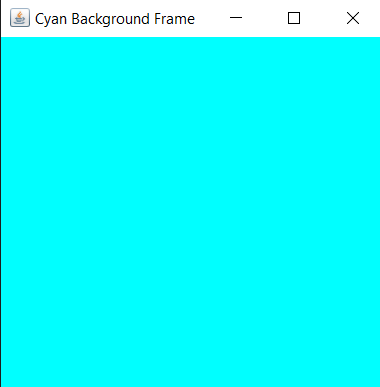

15. Java Program to Display Text in Different Fonts
import java.awt.*;
import java.awt.event.WindowAdapter;
import java.awt.event.WindowEvent;
public class CyanBackgroundFrame extends Frame {
public CyanBackgroundFrame() {
// Set up the frame
setTitle("Cyan Background Frame");
setSize(400, 300);
// Set the background color to cyan
setBackground(Color.CYAN);
// Set up close operation
addWindowListener(new WindowAdapter() {
public void windowClosing(WindowEvent windowEvent) {
System.exit(0);
}
});
}
public static void main(String[] args) {
// Create and show the frame
CyanBackgroundFrame app = new CyanBackgroundFrame();
app.setVisible(true);
}
}
OUTPUT
